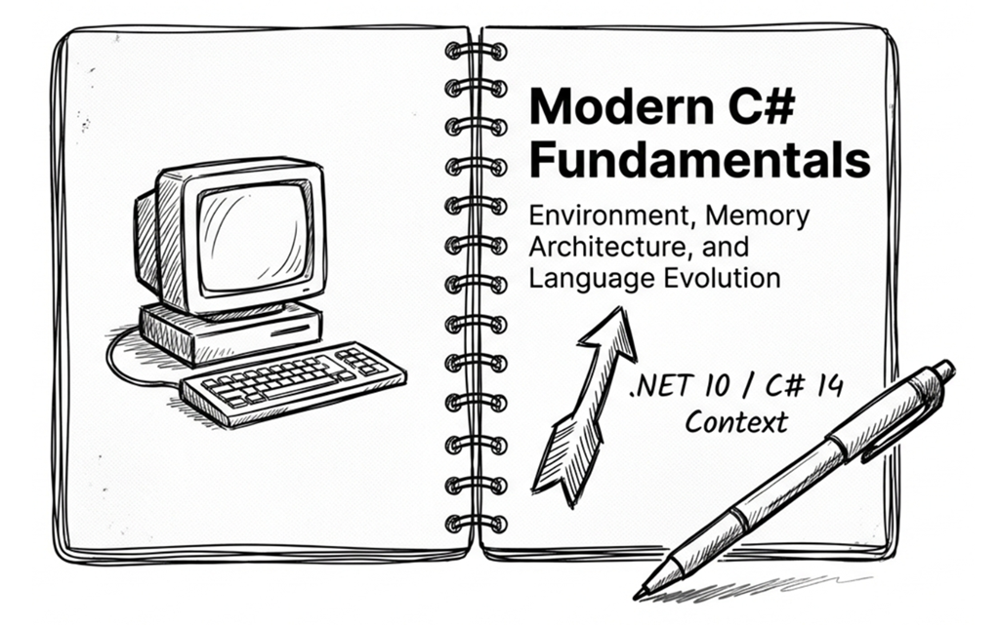
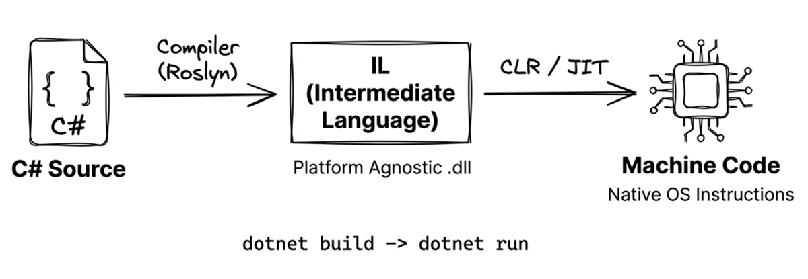
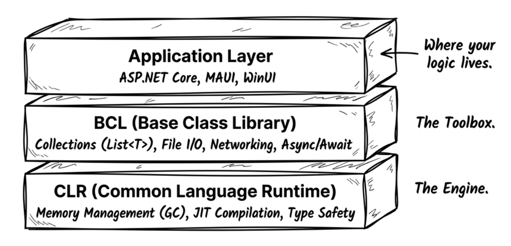
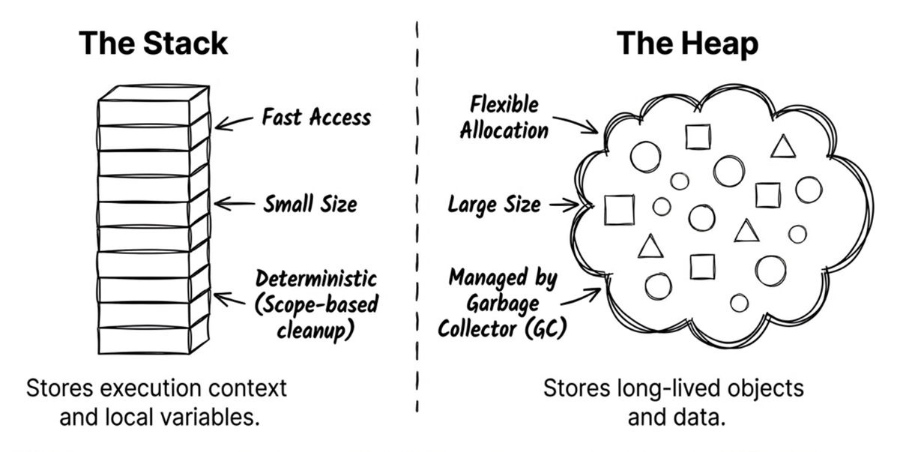
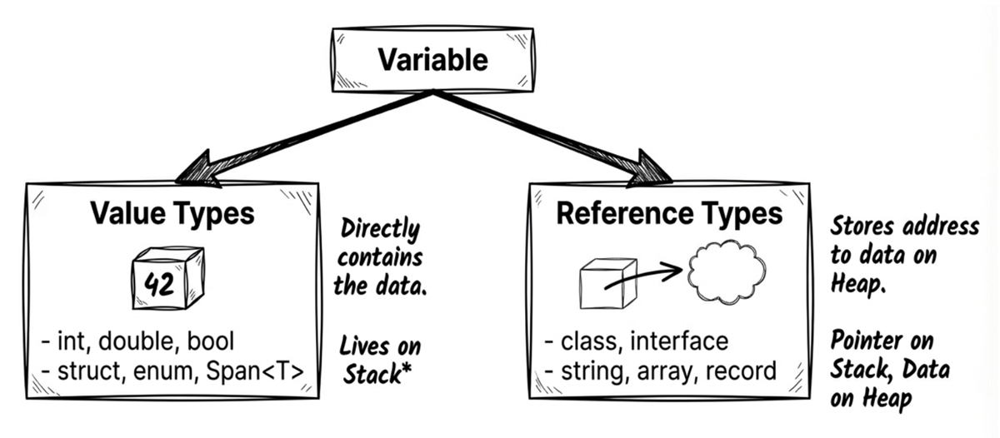
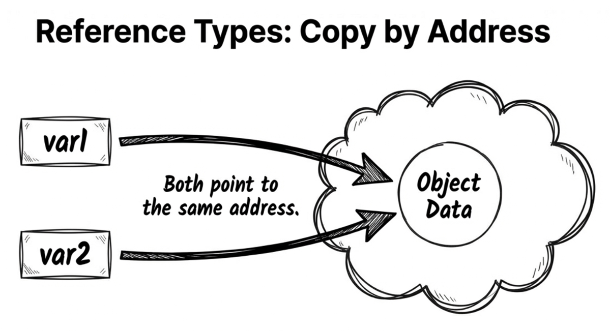
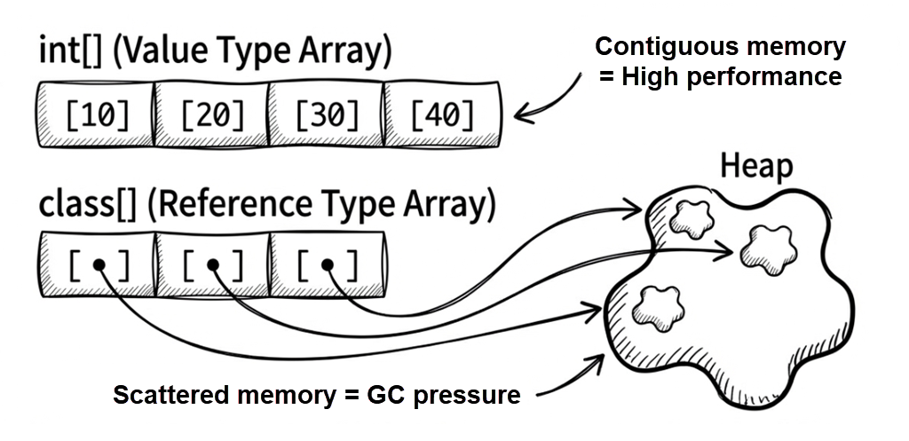
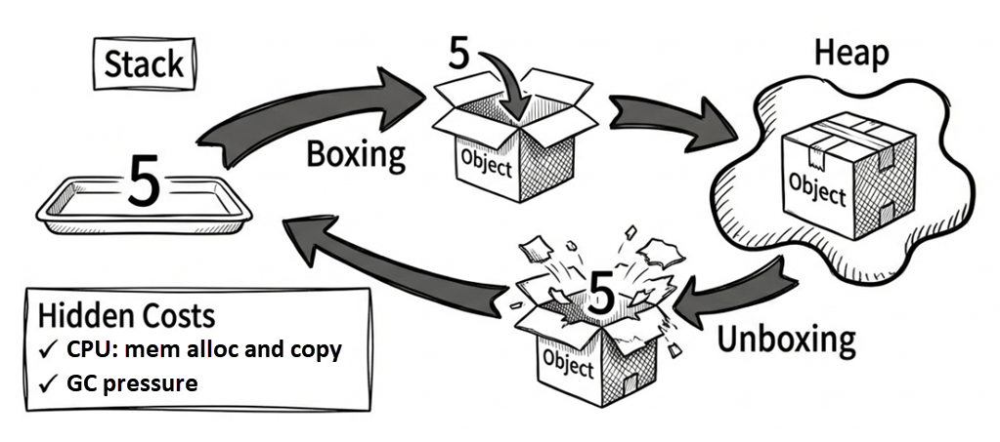

Chapter 1: Modern environment and fundamentals

This chapter begins with the basic development environment, then explores the core mechanics of the .NET runtime and the C# type system. We won’t dwell on basic control flow like if/else statements and loops; instead, we’ll dive straight into the foundational concepts you’ll need for the more advanced C# features covered later in this book.
1.1 The design philosophy
C# is fundamentally an object-oriented language that emphasizes encapsulation, inheritance, and polymorphism. However, starting with C# 3.0, it began incorporating many of the best ideas from functional programming:
| Functional feature | C# implementation |
|---|---|
| Functions as values | Delegates and lambda expressions |
| Declarative data processing | LINQ query expressions |
| Immutability | record, readonly struct, init accessors |
| Pattern matching | switch expressions, the is operator |
This exemplifies C#’s OOP + FP hybrid design, combining the organizational power of object-oriented programming with the declarative expressiveness of functional programming. Records, pattern matching, and LINQ all grow out of this philosophy.
Terminology
In programming languages, an expression is typically “a piece of code that can be evaluated and produces a value.” A statement, on the other hand, performs an action and usually does not directly produce a value.
Let’s move on to the type system.
Type safety: your first defense
C# is a strongly typed language with strict type rules:
- Static typing: A variable’s type is determined at compile time, allowing the compiler to catch type errors before the program ever runs.
- Strong typing: Risky implicit conversions are prohibited. For example, you can’t assign a
doubledirectly to anint; you must use an explicit cast.
This helps you catch errors earlier and reduces the chance of runtime failures. Many modern C# features, such as Nullable Reference Types, further reinforce this safety net.
The following code shows how C# blocks an implicit conversion that could lose information:
In this example, the compiler is not forbidding the conversion outright; it requires you to make the potential loss of information explicit. That design keeps risky operations from happening quietly in your code.
In other words: let the compiler help you reduce potential bugs. Type safety, null safety, pattern matching, and record-based value equality all reduce surprises at runtime.
1.2 Quick start
This section walks you through creating a minimal .NET project and observing how it compiles and runs. We’ll start with the command-line interface (CLI) so you can understand the .NET project structure and build pipeline.
Required tools
Before you begin, install the following:
- .NET 10 SDK (or later): required for building .NET applications.
- A development tool (IDE/editor). Pick what you’re comfortable with:
- Visual Studio 2026 Community: The most powerful Windows IDE for large-scale and enterprise projects.
- Visual Studio Code: A cross-platform (Windows, macOS, Linux), lightweight, and highly extensible editor—perfect for fast editing and highly customized workflows.
- JetBrains Rider: A powerful cross-platform IDE (Windows, macOS, Linux); free for non-commercial use.
Your first .NET project
Forget File > New Project for a moment. Open a terminal (the commands below use Windows as an example) and follow these steps:
Step 1: Create a console app
dotnet new console --name HelloCSharpThis creates a C# console project named HelloCSharp from the default template. You’ll get a Program.cs file with a default entry point that contains just one line of code (excluding comments):
// See https://aka.ms/new-console-template for more information
Console.WriteLine("Hello, World!");Step 2: Enter the project directory
cd HelloCSharpStep 3: Run the app
dotnet runWhen you run dotnet run, the .NET SDK automatically restores packages, builds the project, and then executes it. Next, you should see:
Hello, World!Although you only typed two .NET CLI commands here, dotnet new and dotnet run (cd doesn’t count), the overall workflow still involves three stages:
dotnet new: Generates the project file (.csproj) and source file (Program.cs) from a template.dotnet build: Compiles C# source into Intermediate Language (IL) and packages it into a.dllor.exe.dotnet run: Starts the .NET runtime (Common Language Runtime, CLR) to execute the compiled program.

What is IL (Intermediate Language)?
C# code isn’t compiled directly into machine code. Instead, it’s compiled into a platform-independent instruction set called IL. This allows the same compiled output to run seamlessly on Windows, macOS, Linux, and other platforms. At runtime, the .NET runtime (CLR) uses JIT (Just-In-Time) compilation to translate this IL into optimized native machine code for the host platform. For details, see the Microsoft documentation.
If you’d like to try writing and running the example using an IDE, see Microsoft’s tutorial: Create a .NET console application using Visual Studio.
Note
Modern C# projects typically enable top-level statements. That’s why
Program.csno longer contains the olderclass Program/static void Mainboilerplate—you just writeConsole.WriteLine("Hello, World!");directly.
1.3 The .NET runtime architecture
When you type dotnet run, a sophisticated, layered system goes to work behind the scenes. .NET is designed to balance developer convenience with low-level performance control.
At a high level, the .NET runtime environment consists of three primary layers:
| Layer | Name | Responsibilities |
|---|---|---|
| Top | Application Layer | Application frameworks (ASP.NET, MAUI, WinUI, etc.) |
| Middle | BCL | Base Class Library (collections, I/O, networking, cryptography, etc.) |
| Bottom | CLR | Common Language Runtime (memory management, JIT compilation, exception handling) |

The CLR (Common Language Runtime) is the heart of .NET. It’s responsible for:
- Compiling IL into machine code (JIT compilation)
- Automatic memory management (garbage collection)
- Type-safety checks
- Exception handling
The BCL (Base Class Library) provides the essential building blocks you’ll use constantly:
- Collections (
List<T>,Dictionary<TKey,TValue>) - String processing and regular expressions
- File I/O and networking
- Asynchronous programming (
async/await)
The Application Layer contains higher-level frameworks for specific app types:
- ASP.NET Core: web apps and APIs
- MAUI: cross-platform mobile and desktop apps
- WinUI / WPF: Windows desktop apps
Once you understand these layers, it becomes easier to see why the same C# code can run in different environments.
Cross-platform support
Modern .NET (starting with .NET 5) supports multiple platforms:
| Platform | Supported app types |
|---|---|
| Windows | Console, Web, desktop (WPF/WinUI), services |
| macOS | Console, Web, desktop (Mac Catalyst) |
| Linux | Console, Web, services |
| iOS / Android | Mobile apps (via MAUI) |
| Browser | WebAssembly (via Blazor) |
This means your C# code can run on any of these platforms, provided you avoid coupling it to platform-specific APIs.
Beyond the execution environment, the next foundation that directly affects program behavior and performance is how memory is allocated.
1.4 Stack and heap
Writing high-performance, bug-free code requires a solid understanding of memory allocation. The two foundational concepts here are the stack and the heap.
An intuitive way to think about them:
- The stack is like your physical workspace (your desk):
- Limited space, but extremely fast access.
- Used for the work you’re doing right now (method calls and local variables).
- When the work is done (the method returns), the desk is cleared instantly.
- The heap is like a storage warehouse:
- Very large, but slower to access.
- Used for long-lived data or large objects.
- When you’re done with an item, it doesn’t disappear immediately—it waits for the cleanup crew (the garbage collector) to reclaim it.

Ultimately, both the stack and the heap are just regions of RAM. We give them different names because the runtime manages them differently.
The stack
- Characteristics:
- Very fast: allocation and release are just pointer moves.
- Deterministic: variables are released automatically when they leave scope.
- Small: typically 1–4 MB depending on the platform and configuration; exhausting it causes
StackOverflowException. The most common cause is infinite or excessively deep recursion.
- What it stores:
- Basic data for local variables.
- Method call context (parameters and call frames).
The heap
- Characteristics:
- Higher cost: allocation and deallocation cost more than they do on the stack; deallocation relies on the garbage collector (GC), which runs in periodic batches rather than reclaiming memory the instant an object is no longer needed. This deferral is intentional, because reclaiming memory immediately on every deallocation would introduce significant overhead.
- Flexible: large space, suitable for long-lived or variably sized data.
- What it stores:
- Larger or longer-lived data, objects, and collections.
1.5 Value types and reference types
As mentioned earlier, C# programs run on top of the CLR (Common Language Runtime). The CLR has many responsibilities, including memory management, exception handling, and enforcing safety mechanisms. You don’t need to master all the CLR internals right away. For now, just keep these two primary jobs in mind:
- Managing type information
- Allocating and reclaiming memory (garbage collection)
When allocating memory, the CLR decides how data is laid out based on type characteristics, usage patterns, and runtime optimizations. Whether a type is a value type or a reference type is an important part of the story, but it is not the only factor that determines whether data ends up on the stack or the heap.

Value types
Value types include:
- All numeric types (
int,double,byte,decimal, …) bool,charenumstruct(includingDateTime,Guid,Span<T>)
Note:
Span<T>is aref struct. This is a special stack-only struct: theSpan<T>value itself cannot escape to the heap, so it cannot be boxed or used as a field in aclass. However, the data it represents is not necessarily on the stack; it may refer to a slice of a heap array or to other memory regions. See Section 13.2 of Chapter 13 “High-performance memory operations” for details.
Behavioral characteristics:
- They contain the data directly.
- Assigning one to another variable copies the entire value (copy by value).
Think of it like photocopying a physical document. If you hand a copy to a coworker (assignment), and they write on their copy (mutating their variable), your original document remains unaltered.
The following example demonstrates this value-type behavior: assignment copies the value itself.
Line 3 changes b, but a remains unchanged because int is a value type.
Source code: DemoValueTypes
Reference types
Reference types include:
class(includingstring,object, and arrays such asint[])interfacedelegate(delegates and lambdas are covered in Chapter 8, and events in Chapter 9)record(a reference type by default; see Chapter 4)
Note
Although
stringis a reference type, it is immutable, so in practice it often behaves similarly to a value type. In terms of type classification, however, it is still a reference type.
Behavioral characteristics:
- They store a reference (a memory address) that points to an object on the heap.
- Assigning one to another variable copies only the reference, resulting in both variables pointing to the same object.
It’s like sharing a link to a cloud document. You send your coworker the link (assignment). Both of you hold a copy of the link (the reference), and both copies point to the exact same online document (the object). If your coworker edits the document through their link, you’ll instantly see those changes.

With reference types, assignment behaves differently. In the following example, user2 receives a reference to the same object:
Therefore, when you modify Name through user2, user1 sees the modified state of that same object.
Source code: DemoReferenceTypes
Ask AI: common type gotchas
Many subtle bugs stem from misunderstandings about these type categories, which is also why technical interviewers love this topic. Try running the following prompt through your AI assistant to check your understanding:
Prompt
In C#, is
int[](an array of integers) a value type or a reference type? If it’s a reference type, but it containsintelements (value types), where are thoseintvalues stored—on the stack or on the heap? Explain the underlying memory layout.
Depending on the AI tool you use, answers may vary slightly. Here’s a simplified example answer:
AI Answer
int[]is an array, and arrays are reference types. Therefore, the entire array object (including all itsintelements) is stored on the heap, even thoughintitself is a value type.
Array layout: value vs reference elements
Many developers assume that an array is always a contiguous block of memory, but this is only partially true.
The underlying memory layout depends heavily on whether the element type is a value type or a reference type. This difference can affect performance (CPU cache locality) and garbage collection (GC) pressure. Next, let’s look at both cases from a memory-allocation perspective.
Arrays of value-type elements
Consider this example:
On the heap, the CLR allocates a single, contiguous block of memory. The three long values are stored directly within the array’s memory footprint. Concretely:
- Array header: Includes metadata such as the array length.
- Contents: Stores the raw values (like
12345) packed tightly. - Result: One allocation; data is dense and cache-friendly.
An analogy: A row of gym lockers. You open locker #0, and your item (the value) is right there. Open locker #1, and the next item is immediately next to it.
Arrays of reference-type elements
Next, consider an array whose element type is StringBuilder:
In this scenario, the array stores references, not the actual string data:
- Array header: Includes metadata such as length.
- Contents: Stores references (addresses) to
StringBuilderobjects. - Actual objects: Allocated separately and scattered on the heap.
- Result: Multiple allocations (one for the array + one for each object), poorer locality, and higher access cost.
An analogy: A row of post office boxes. Box #0 contains a slip (a reference) saying, “Your package is in warehouse section B, shelf 3.” You then have to walk to the warehouse (somewhere else on the heap) to retrieve the actual package (the object). If each slip points to a completely different corner of the warehouse, you’ll waste significant time walking back and forth.
This leads to two important effects:
- Locality: value-type arrays store elements contiguously, so CPU cache hit rates tend to be higher.
- GC pressure: reference-type arrays often create many scattered objects, increasing garbage collector work.

Key takeaways for this section:
- Whether you’re using a value type or a reference type, data still has to live somewhere in memory.
- Call-related data and many locals are often represented in a stack frame or in registers, but that is ultimately a runtime/JIT implementation detail.
- The key property of a value type is that it stores its data directly; that data may appear in a local, inside a heap object, or inside an array element.
- A reference-type variable stores a reference; the object it points to is typically allocated on the heap.
1.6 Boxing and unboxing
Boxing and unboxing are mechanisms that allow value types to be treated as objects, but they come with additional performance costs.
Boxing
Boxing is the process of converting a value type into an object (a reference type).
Imagine picking an apple (a value type). Normally, you use it directly as a raw value. But if you now want to treat it as a general-purpose object stored in a warehouse (the heap), you must place it inside a physical box (boxing) and slap a tracking label on it. Procuring the box and packing the item introduces overhead.
During boxing, the CLR allocates memory on the heap and copies the value-type data into it. This is necessary because object is a reference type that requires a heap address, whereas a value type like int has no heap address on its own. Boxing creates a heap-allocated wrapper so the value can participate in reference-type semantics.
First, here is a minimal boxing example:
Here, o is a reference that points to a newly created boxed int object on the heap.
Unboxing
Unboxing is the reverse process: converting an object back into a value type.
Unboxing involves verifying that the object contains the expected value type, then copying the value from the heap back to the stack.
When unboxing, you must explicitly specify the value type you want to retrieve:
int j = (int)o; // UnboxingIf o does not actually contain an int, this line throws an exception at runtime.

Why it matters
Boxing has two main costs:
- CPU work: Copying data and allocating memory.
- GC pressure: Boxing creates extra heap objects, giving the garbage collector more work.
Hidden boxing traps often occur when using older, non-generic collections (like ArrayList) or certain string formatting methods. Because ArrayList stores every element as object, adding a value type automatically triggers boxing. Here’s a common example:
Source code: DemoBoxingUnboxing
Whether string interpolation causes boxing depends heavily on your compiler version and the specific code. In modern C# and .NET, interpolating value types (like int) is highly optimized and typically avoids falling back to the boxing string.Format(object, ...) path, though you may still incur string allocations.
If you have heavy string formatting on a performance-critical hot path, more reliable optimization approaches include:
- Avoid APIs that primarily take
objectparameters (for example, someparams object[]overloads). - Prefer formatting APIs that can write into buffers, such as
TryFormatwithSpan<char>, to reduce temporary string allocations (see Chapter 13). - For collections, prefer generic collections—for example, use
List<int>instead ofArrayList.
- String interpolation is introduced in Chapter 2 (Section 2.7).
- Generics are covered in Chapter 9.
1.7 Copying objects and arrays
When copying objects or arrays, it’s crucial to understand the difference between a shallow copy and a deep copy. C# does not provide a universal built-in deep-copy mechanism. Because this topic is closely tied to value and reference types, it is an important part of understanding memory behavior.
Shallow vs deep copy for objects
A shallow copy copies only the top-level object itself. If that object contains reference-type fields, those fields will still point to the exact same inner objects:
class Team
{
public string Name { get; set; } = string.Empty;
public List<string> Members { get; set; } = new();
// Uses object.MemberwiseClone() to copy members one by one (shallow copy)
public Team ShallowCopy() => (Team)MemberwiseClone();
}
var team1 = new Team
{
Name = "Dev",
Members = new List<string> { "Alice", "Bob" }
};
var team2 = team1.ShallowCopy(); // Shallow copy
team2.Name = "QA"; // team2 has its own Name value
team2.Members.Add("Charlie"); // But Members still points to the same List!
Console.WriteLine(team1.Members.Count); // Prints 3 (affected!)This demonstrates a classic shallow-copy bug: the internal List is not duplicated; only the reference to it is. As a result, adding an element to team2.Members inadvertently mutates team1.Members.
Source code: DemoShallowCopy
Early .NET versions introduced the ICloneable interface as the standard approach for object copying. However, its major flaw is semantic ambiguity: Clone() never clarifies whether it returns a shallow or a deep copy. When calling a third-party Clone() method, you have to dig through documentation to find out what it actually does.
Because of this, even though ICloneable is not formally obsolete, it is usually a poor choice for a public cloning contract. In practice, if a type should expose copying behavior, it is better to use explicitly named methods such as ShallowCopy() or DeepCopy(), as shown earlier.
Note
Other ways to copy objects include a copy constructor, or using
recordtypes with thewithexpression for non-destructive mutation (see Chapter 4). Keep in mind thatwithis still a shallow copy by default; nested mutable reference-type members remain shared unless you copy them explicitly.
To provide a deep copy, you must explicitly decide which members need new instances. The following example uses a copy constructor:
class Team
{
public string Name { get; set; }
public List<string> Members { get; set; }
public Team() { }
public Team(Team original)
{
// A string reference can be reused safely.
Name = original.Name;
// Create a new List to avoid sharing the
// same Members collection with the original object.
Members = new List<string>(original.Members);
}
}
var team1 = new Team
{
Name = "Dev",
Members = new List<string> { "Alice", "Bob" }
};
var team2 = new Team(team1); // Create a copy via the copy constructor
team2.Members.Add("Charlie");
Console.WriteLine(team1.Members.Count); // Prints 2 (team1 unaffected)The following line creates a new List so the copy does not share the same Members collection as the original:
Because the elements are immutable string instances, copying their references is sufficient; there is no need to duplicate the string objects themselves.
In this example:
- The
Nameproperty is copied by reference (a shallow copy), which is perfectly safe becausestringis immutable. Even though strings might appear mutable, operations likeReplaceandToUpperactually allocate new string objects rather than modifying the original data. Membersis aList<string>, which is mutable. To avoid sharing the same list, you must create a new list instance.- While not mandated by the language, copy constructors are a widely accepted practice. Their intent may seem less explicit than a method named
DeepCopy(), but they offer strong typing and align well with modern .NET design. In fact, C# 9recordtypes inherently rely on compiler-generated copy constructors.
Source code: DemoDeepCopy
Note that new List<string>(original.Members) creates a new list container. Because the elements are immutable string values, that alone is enough to achieve the isolation this example needs. If the list contained mutable reference-type elements instead, for example, List<Person>, then new List<Person>(original.Members) would copy only the container, while every Person reference inside would still point to the original objects. In that case, you’d need to copy each Person individually to achieve true isolation.
As a general rule, if an object graph contains nested, mutable reference types (for example, a Team contains a Manager, which in turn references other objects), a true deep copy requires recursively creating new instances at every level. In practice, developers often use serialization and deserialization (e.g., via System.Text.Json) or third-party mapping libraries to automate complex deep copies.
Note
For more on immutability, see “Chapter 4: Immutable design.”
Here’s a summary of common object-copy approaches:
- Implement
ICloneable.Clone(): not obsolete, but usually not recommended as a public API. Downsides: ambiguous semantics and lack of strong typing (it returnsobject). - Provide a copy constructor: allows you to precisely control the copy logic and preserves strong typing. Downside: can become highly verbose for types with many members.
record+withexpression: offers clean, concise syntax and works well for immutable data and non-destructive mutation, but it is not a general-purpose deep-copy mechanism (see Chapter 4).- Serialization: the simplest workaround for deep copies, but usually much slower and typically ignores private members.
Ask AI
I want to understand the pros and cons of these object-copy approaches in .NET: ICloneable, record (with), copy constructors, and serialization. Please summarize them in a comparison table.
Then, implement deep copy using .NET’s built-in
System.Text.Json.
Shallow vs deep copy for arrays
Array copying follows the same principle as object copying: Array.Clone() performs a shallow copy.
If the array element type itself does not contain mutable reference state, such as int or string, a shallow copy is often enough. The following example copies an int[]:
Be careful, though: this works because int is just the value itself. If the array element type is a struct that contains reference-type fields, Array.Clone() still performs only a shallow copy of those inner references, so it does not automatically give you full isolation.
If the array elements are reference types, be careful:
The output is A!. Although Array.Clone() creates a new array object, the elements inside still point to the same StringBuilder objects as original, so mutating copy[0] also affects original[0].
To create a deep copy, you must copy each element individually:
var original = new StringBuilder[]
{
new StringBuilder("A"),
new StringBuilder("B")
};
var deepCopy = new StringBuilder[original.Length];
for (int i = 0; i < original.Length; i++)
{
deepCopy[i] = new StringBuilder(original[i].ToString());
}
deepCopy[0].Append("!");
Console.WriteLine(original[0]); // Prints "A" (unaffected)This time the output is A, showing that deepCopy and original are two independent arrays.
Source code: DemoDeepCopyArray
Summary
- C# design philosophy: An OOP + FP hybrid with strong type safety that lets the compiler help prevent potential bugs.
- Execution model: Source code compiles to IL (Intermediate Language). At runtime, the CLR uses JIT compilation to generate native machine code while simultaneously managing memory via garbage collection (GC).
- Stack vs heap: The stack is fast but limited (mostly locals); the heap is large but GC-managed (object instances).
- Value types vs reference types: Value types contain data directly, while reference types store references to objects; you can think of a reference as a memory address that points to an object.
- Array memory characteristics: Value-type arrays allocate elements contiguously (excellent cache locality); reference-type arrays store scattered references (can lead to increased GC pressure).
- Boxing/unboxing: Boxing converts a value type to
object; unboxing extracts the boxed value back to its original value type. Both can introduce extra cost. - Object copying: C# provides shallow copy only; deep copy requires manual work or serialization (for example,
System.Text.Json).
Glossary
| Term | Description |
|---|---|
| BCL | Base Class Library; collections, I/O, networking, and other fundamental APIs |
| Boxing | Converting a value type into an object |
| CLI (command line interface) | A text-based interface for interacting with the computer |
| CLR | Executes .NET code; provides JIT compilation and memory management |
| GC (garbage collector) | Automatically manages and reclaims heap memory |
| Heap | Memory region where objects live; managed by the GC |
| IL (intermediate language) | Platform-independent compiled output for .NET languages |
| Immutable | Cannot be changed after creation (for example, string) |
| JIT (Just-In-Time compilation) | Compiles IL to machine code at runtime |
| Reference type | Stores a reference/address to an object (for example, class, string) |
| Stack | Fast, limited memory region used for locals and call frames |
| Top-level statements | Write statements without explicitly defining a Program class |
| Unboxing | Converting an object back into a value type |
| Value type | Stores data directly (for example, int, struct) |